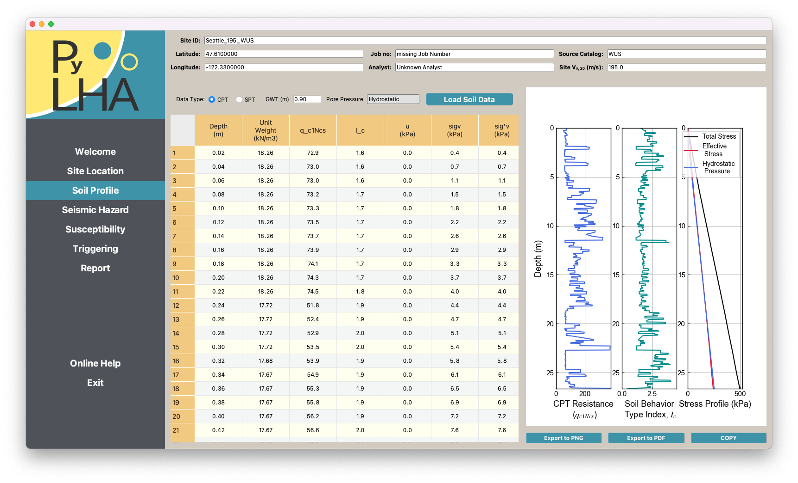
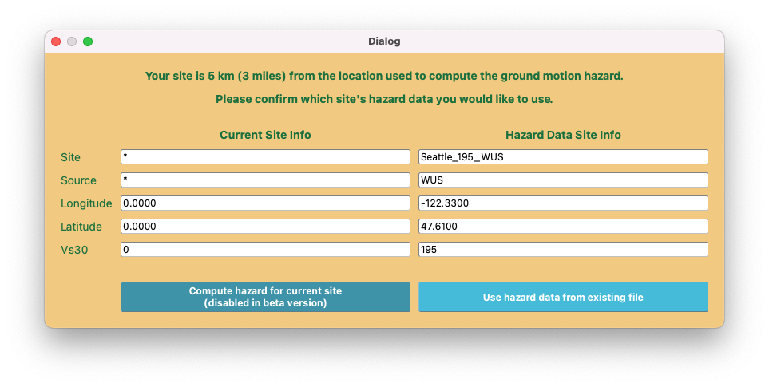
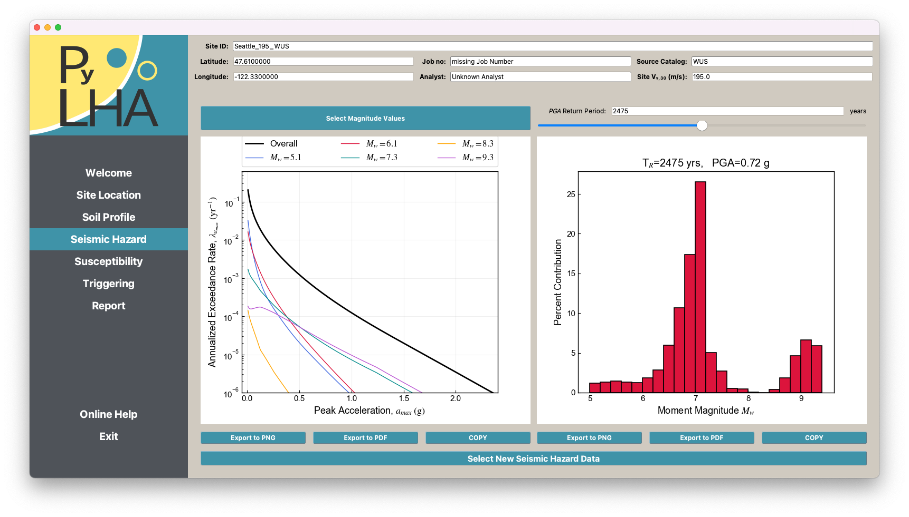
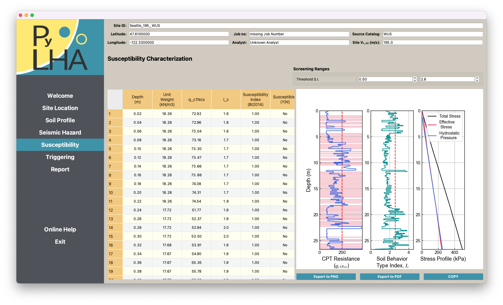
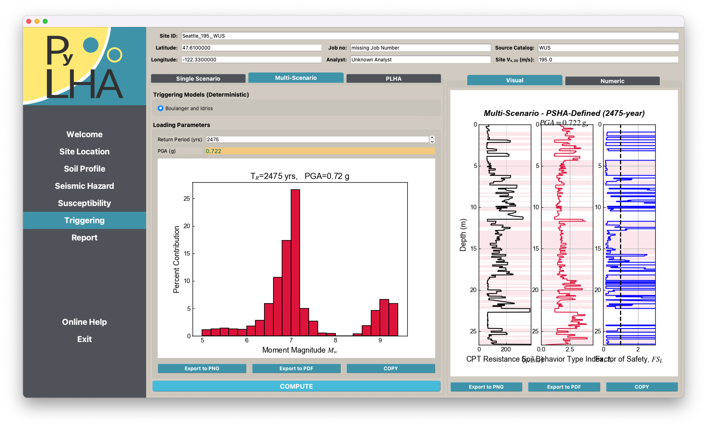
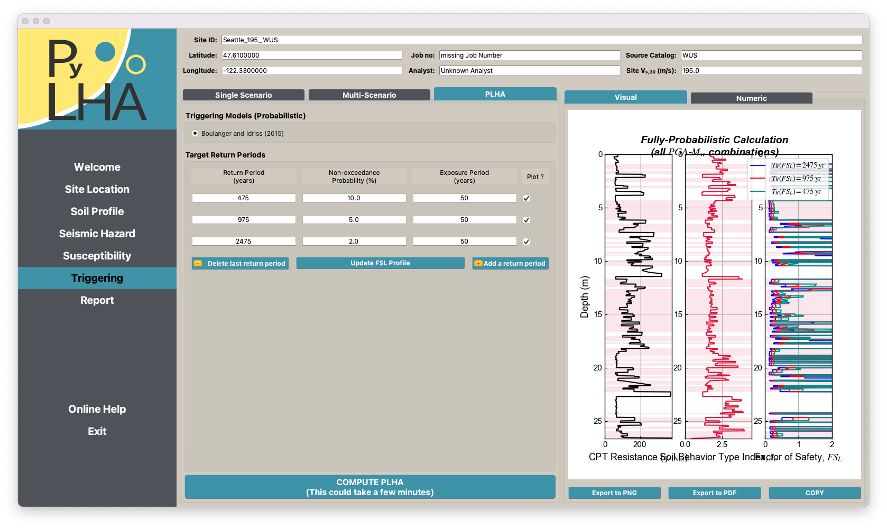
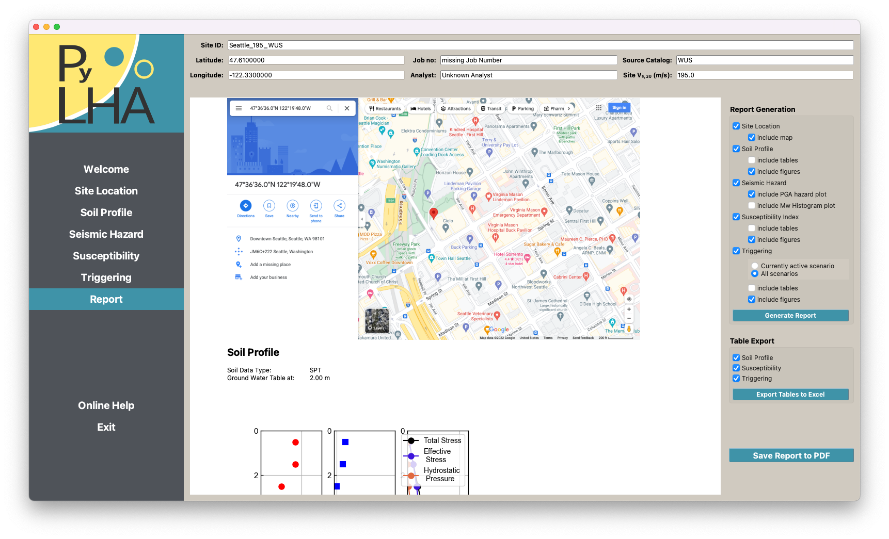
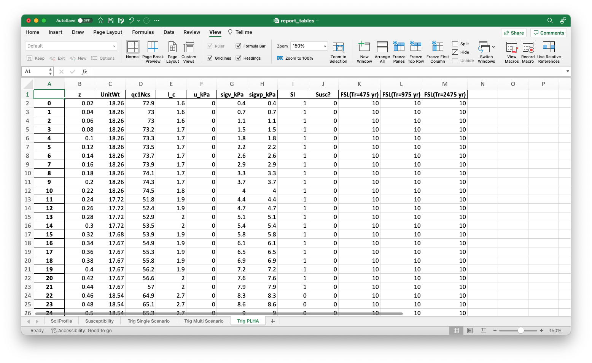

Example 2: CPT profile
Site location information
Site location can be entered through the Site Location module by
entering numeric coordinates, or
selecting a location by mouse click on the interactive map. (This requires checking the option above the map view.)
Alternatively, the site information will be set accordingly when loading a pre-computed hazard data set in the Hazard module.
{kind=link}
Soil profile definition
soil profiles are entered through import from a formatted Excel spread sheet. (The provided templates need to be used.) Go to the Soil Profile module and click the Load Soil Profile button to load your soil data.
Two demo profiles have been installed with the software. They can be found in
Users\YOUR_USER\Documents\PyLHA\SoilProfiles. That folder is also the recommended location to store your profile definition files.
{kind=link}
A successful import will show the provided data in a table and as a visual representation.
{kind=link}
The Hazard module is restricted to pre-computed hazard data (\(\beta\)-version only) and will direct you to the selection interface. Four demo profiles were installed with this software.
They can be found in Users\YOUR_USER\Documents\PyLHA\ExistingHazardData.
In the production release, any hazard data computed will be stored in that folder for efficient computations for this or nearby sites.
{kind=link}
You may see the following dialog warning about a non-matching location for the pre-computed hazard data.
{kind=link}
This dialog will change in the final release when site specific hazard data can be downloaded from the USGS web interface and processed on your computer. In the meantime, please accept the shift in the site location.
 {kind=link}
{kind=link}
Running a Multi Scenario Triggering analysis for this soil profile. (Other triggering scenarios are shown in Example 1: SPT profile)
{kind=link}
Running a PSHA analysis for this soil profile. (Other triggering scenarios are shown in Example 1: SPT profile)
{kind=link}
A summary of the analysis and numeric data can be viewed and downloaded through the Reprot module.
{kind=link}
Note
The site information map is only created after visiting the Site Location module. If site location has been updated through loading a pre-computed hazard data set in the Hazard module, you need to view the Site Location module afterwards to update the map. (this is a limitation of the Web-interface integration and might get fixed by the provider of the interface library)
Exporting results to Excel will create a single Excel file with one sheet per table as shown.
{kind=link}